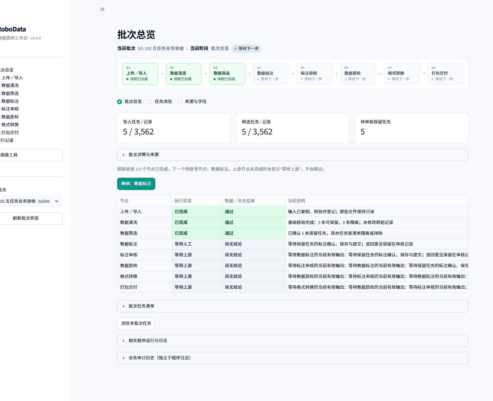
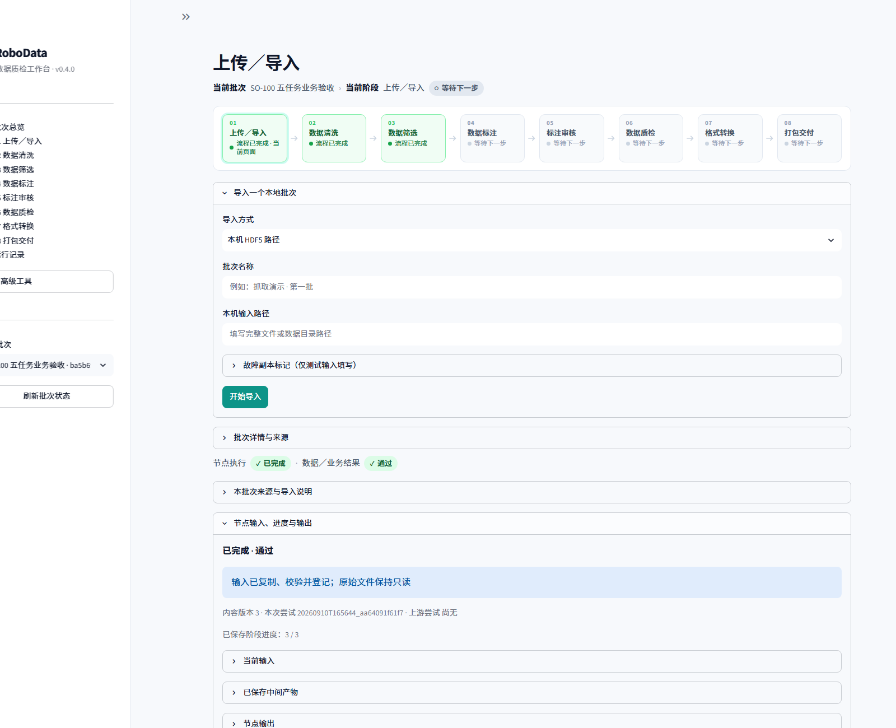
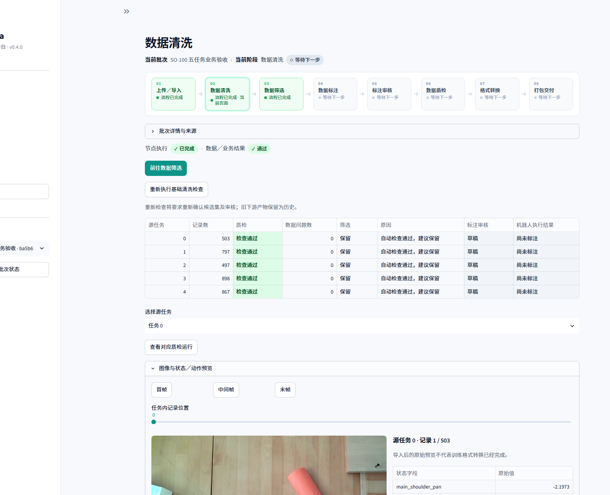
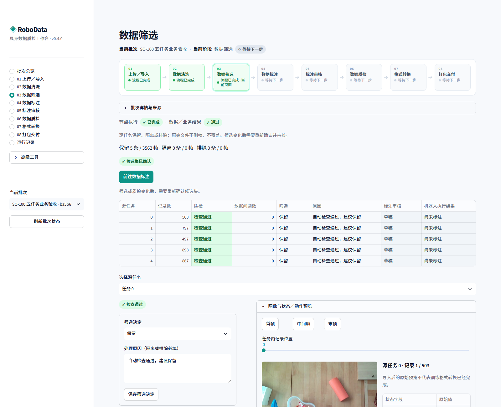
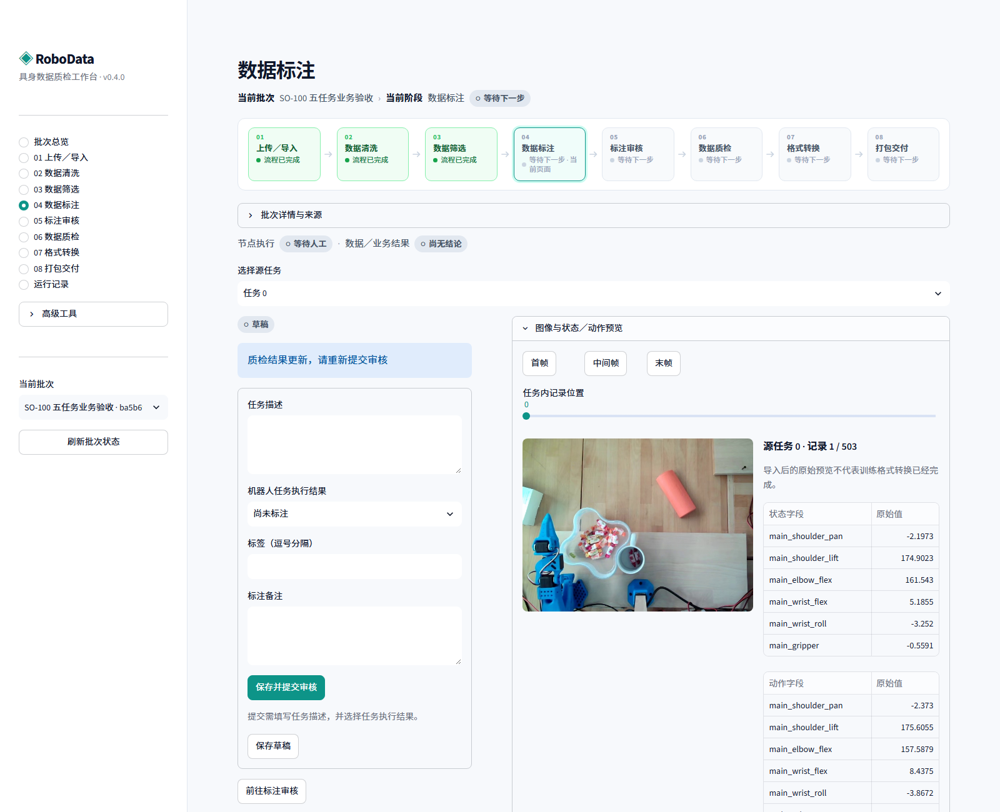
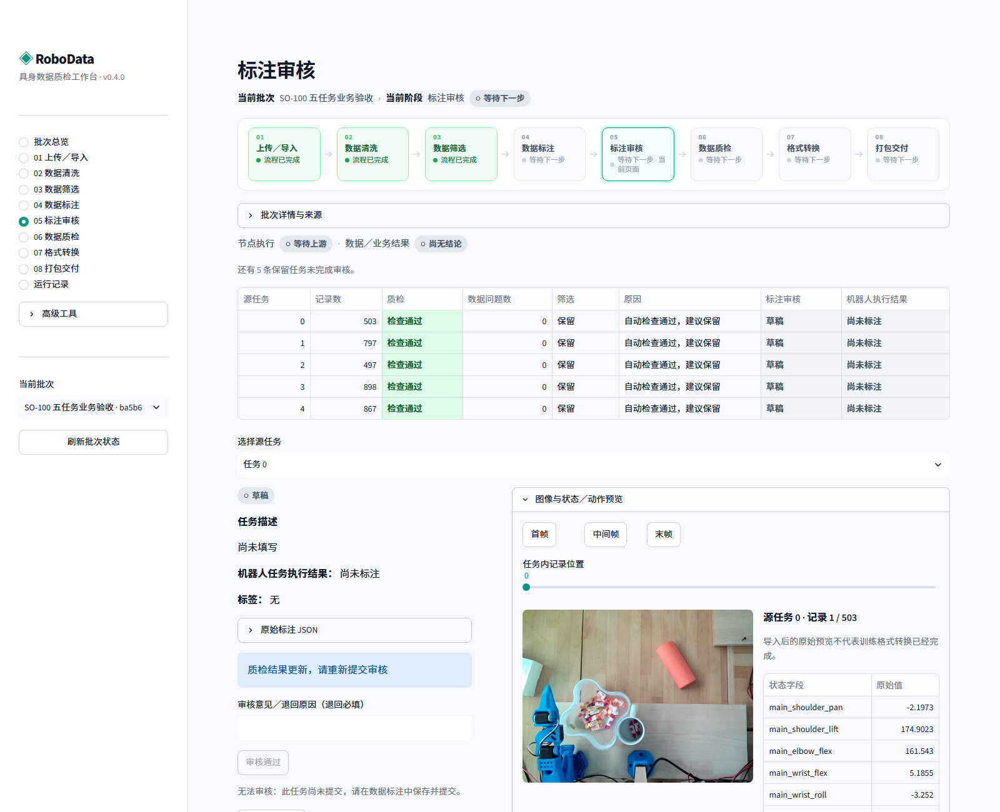
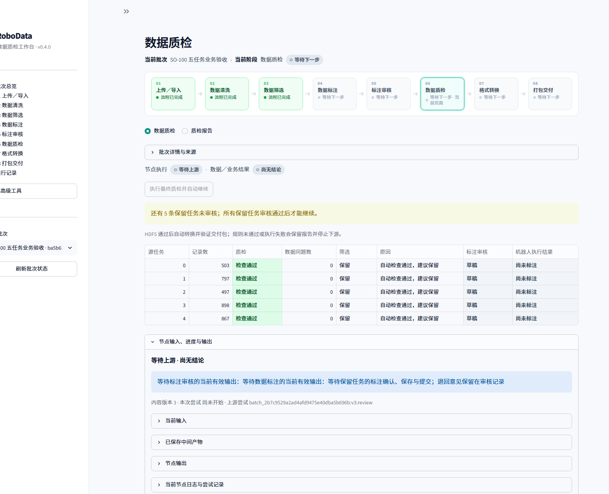
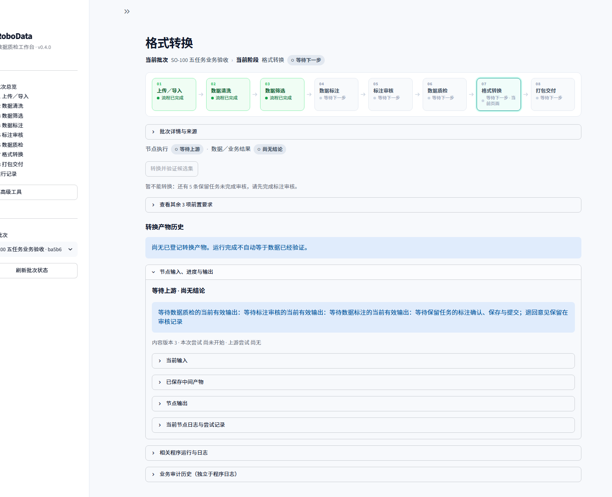
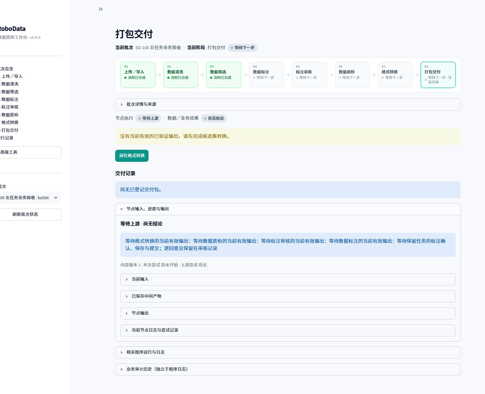
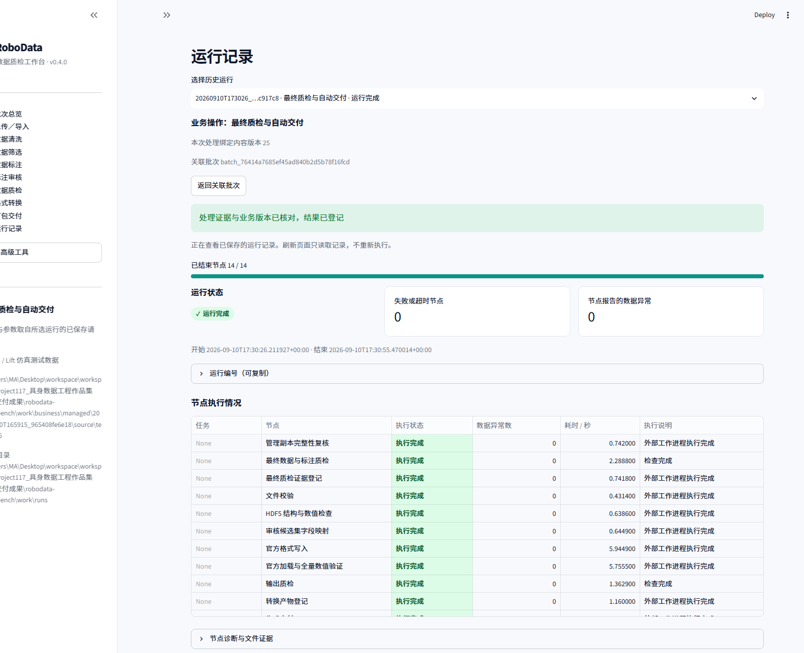

| 来源 | 范围 | 维度 | 用途 |
|---|---|---|---|
| jmrog/so100_sweet_pick | Episode 0–4，3,562 帧 | 状态 6 / 动作 6，单相机 30Hz | 导入、预览、质检、标注 |
| robomimic/robomimic_datasets（Panda / Lift） | demo_0–2，174 帧 | 状态 9 / 动作 7，84×84 RGB | 候选集转换与打包交付 |
| # | 节点 | 状态 | 耗时(s) | 数据异常 |
|---|---|---|---|---|
| 1 | 管理副本完整性复核 | completed | 0.742 | 0 |
| 2 | 最终数据与标注质检 | completed | 2.289 | 0 |
| 3 | 最终质检证据登记 | completed | 0.742 | 0 |
| 4 | 文件校验 | completed | 0.431 | 0 |
| 5 | HDF5 结构与数值检查 | completed | 0.639 | 0 |
| 6 | 审核候选集字段映射 | completed | 0.645 | 0 |
| 7 | 官方格式写入 | completed | 5.945 | 0 |
| 8 | 官方加载与全量数值验证 | completed | 5.755 | 0 |
| 9 | 输出质检 | completed | 1.363 | 0 |
| 10 | 转换产物登记 | completed | 1.160 | 0 |
| 11 | 生成交付 ZIP | completed | 1.162 | 0 |
| 12 | 独立解包与清单校验 | completed | 0.959 | 0 |
| 13 | 交付包官方离线加载 | completed | 5.448 | 0 |
| 14 | 结果回写与业务版本核验 | completed | 1.163 | 0 |
状态 passed · 格式 v3.0
状态 passed
completed
completed
completed
failed










| 层 | 选用 |
|---|---|
| 页面交互 | Streamlit |
| 业务判断 | 批次 / 任务状态机，人工审核与修订号 |
| 后台执行 | 独立 Python 工作进程，JSONL 事件流 |
| 数据处理 | Pandas、NumPy、PyArrow、PyAV、h5py |
| 格式与验证 | LeRobot 官方写入与加载、PyTorch DataLoader |
| 证据 | SHA-256、JSON / JSONL、逐节点产物 |
# 主环境
uv sync --frozen
# HDF5 全流程需要独立转换环境
uv sync --project tools/conversion --frozen
uv run robodata fetch-hdf5
# 启动本地工作台
.\启动工作台.cmd
# 浏览器打开 http://127.0.0.1:8501/
需要 Python 3.12 与 uv。SO-100 样本另需 uv run robodata fetch-sample（约 53 MB）。